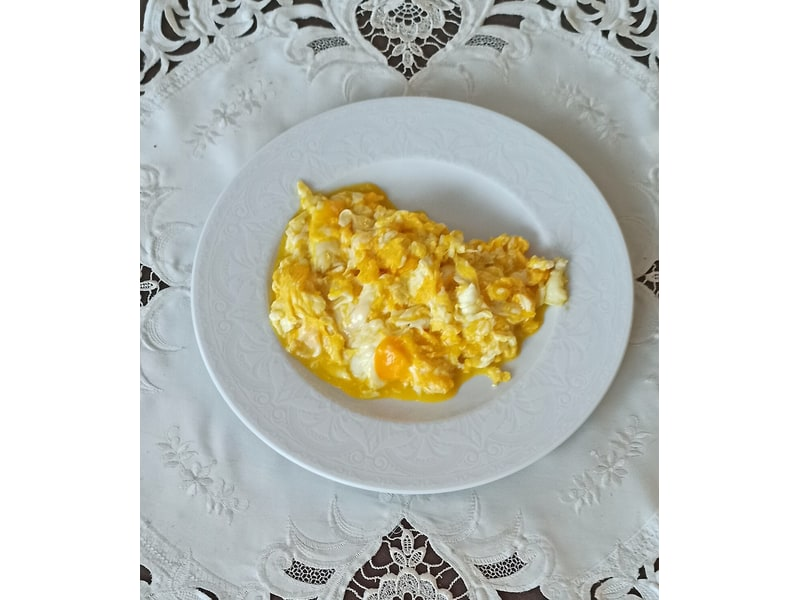

Nabiał i jaja
Jajecznica na maśle
Jajecznica na maśle: 11 g białka, 168 kcal, 1.5 g węglowodanów i 13 g tłuszczu na 100 g. Kategoria: Nabiał i jaja.
Kalorie168 kcalna 100 g
Białko / proteiny11 g
Węglowodany1.5 g
Tłuszcz13 g
Cena (szac.)~1,93 złza 100 g
Ceny zaktualizowano: maj 2026 (szacunek — ceny w popularnych supermarketach)
Porcja: porcja (150g)
| Kalorie | 252 kcal |
|---|---|
| Białko | 16.5 g |
| Węglowodany | 2.3 g |
| Tłuszcz | 19.5 g |
| Cena (szac.) | ~2,89 zł |
Szczegółowe składniki odżywcze na 100 g
| Wartość energetyczna (kalorie) | 168 kcal |
|---|---|
| Białko (proteiny) | 11 g |
| Węglowodany | 1.5 g |
| Tłuszcz | 13 g |
| Tłuszcze nasycone | 5 g |
| Tłuszcze nienasycone | 8 g |
| Witaminy i minerały | Witamina B12, Cholina, Wapń |
| Współczynnik kcal / 1 g białka | 15.3 |
| Cena produktu (szac. za 100 g) | ~1,93 zł |
| Cena za 100 g białka (szac.) | ~17,52 zł |